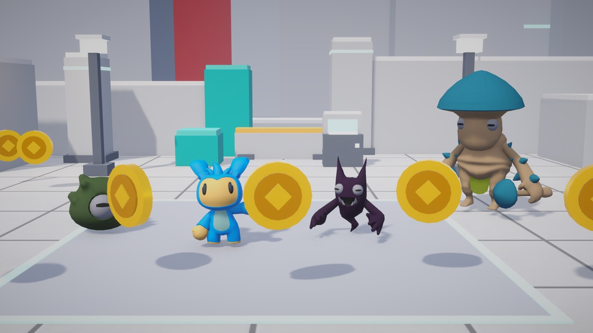
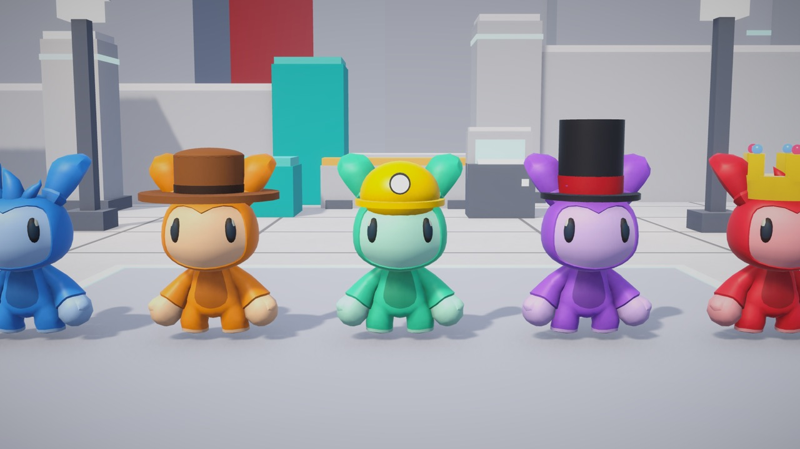

GOLD RUSH · Part 2
Characters and animation
The hero and the monsters are free 3D models with animations. Here you will see how the models are imported, how an Animator Controller with a blend tree is made by code, how the game plays idle, walk and run at the right moment, and how the hero gets a colour and a hat from the shop.

1The models
All characters are by Quaternius and are CC0 (public domain): you may use them in any project. The licence files are in Art/Characters/Licenses/.
| File | Character | Some of its animation clips |
|---|---|---|
Hero/Hero.fbx | The hero | Idle, Walk, Run, Punch, HitReact, Wave, Yes, Death |
Monsters/Slime.fbx | 🟢 Slime | Idle, Walk, Bite_Front, HitRecieve, Dance, Death |
Monsters/Ghost.fbx | Ghost | Flying_Idle, Fast_Flying, Headbutt, Yes, Death |
Monsters/MushroomKing.fbx | 🟡 Mushroom King | Idle, Walk, Run, Punch, Wave, Death |
Click an FBX in the Project window and look at the Animation tab of the Inspector to see every clip and play it in the preview.
HitRecieve in the model. Clip names must match exactly in code, typos included.2Import rules
Editor/CharacterImportRules.cs is an AssetPostprocessor: Unity runs it every time a model in Art/Characters/ is imported. You never have to tick the import settings by hand.
- The rig is set to Generic (not Humanoid), and the animations are imported.
- A clip loops if its name contains one of these words:
idle,walk,run,flying,dance,wave,yes. - The prefix
CharacterArmature|is cut off clip names, soCharacterArmature|IdlebecomesIdle.
foreach (var c in clips)
{
string n = c.name.ToLowerInvariant();
bool loop = false;
foreach (var k in LoopKeywords) if (n.Contains(k)) { loop = true; break; }
if (n.Contains("jump")) loop = n.Contains("jump_idle");
c.loopTime = loop;
c.loopPose = loop;
// "CharacterArmature|Idle" -> "Idle"
int bar = c.name.LastIndexOf('|');
if (bar >= 0) c.name = c.name.Substring(bar + 1);
}Assets/GoldRush/Art/Characters/. After you change them, right-click the model → Reimport.3An Animator Controller made by code
Open Art/Characters/Controllers/Hero.controller and look at it in Window → Animation → Animator. You will see a Locomotion state and four action states. Editor/CharacterSetup.cs made all four controllers when Gold Rush → Setup Project ran.
First, it lists which clip each character uses for each job:
Editor/CharacterSetup.csstatic readonly Spec Hero = new Spec { name = "Hero", ..., idle = "Idle", walk = "Walk", run = "Run", attack = "Punch", hit = "HitReact", win = "Wave", die = "Death" };
static readonly Spec Slime = new Spec { name = "Slime", ..., idle = "Idle", walk = "Walk", run = "Walk", attack = "Bite_Front", hit = "HitRecieve", win = "Dance", die = "Death" };Then it builds the controller: five parameters and a 1D blend tree.
var ctrl = AnimatorController.CreateAnimatorControllerAtPath(path);
ctrl.AddParameter("Speed", AnimatorControllerParameterType.Float);
ctrl.AddParameter("Attack", AnimatorControllerParameterType.Trigger);
ctrl.AddParameter("Hit", AnimatorControllerParameterType.Trigger);
ctrl.AddParameter("Win", AnimatorControllerParameterType.Trigger);
ctrl.AddParameter("Die", AnimatorControllerParameterType.Trigger);
var sm = ctrl.layers[0].stateMachine;
var loco = ctrl.CreateBlendTreeInController("Locomotion", out var tree, 0);
tree.blendType = BlendTreeType.Simple1D;
tree.blendParameter = "Speed";
tree.useAutomaticThresholds = false;
tree.AddChild(Clip(s.fbx, s.idle), 0f);
tree.AddChild(Clip(s.fbx, s.walk), 0.5f);
tree.AddChild(Clip(s.fbx, s.run), 1f);
sm.defaultState = loco;A blend tree mixes clips using a number. With Speed = 0 you see Idle, with 0.5 Walk, with 1 Run, and anything in between is a smooth mix.
Each action (Attack, Hit, Win, Die) is a state reached from Any State when its trigger fires, which then goes back to Locomotion when the clip is nearly done. Die has no way back: the character stays down.
| Parameter | Type | Who sets it |
|---|---|---|
Speed | Float | Hero and monsters, every frame |
Hit | Trigger | Hero, when a monster catches it |
Win | Trigger | Hero on victory. Monsters celebrate when you lose. |
Die | Trigger | Hero, on the last heart |
Attack | Trigger | Monsters, when they catch you |
Hero.controller by hand, your change will be lost. Make the change in CharacterSetup.cs instead, then run Setup Project.4Putting a model in the game
The links between models, controllers and sizes are stored in one asset, Resources/GoldRushAssets.asset (class GameAssets). It has one CharacterDef per character: model, controller, height and a few hat values. Code reaches it with GameAssets.I.
CharacterFactory.BuildModel(def, parent) puts a character into the world:
var m = Object.Instantiate(def.model, parent);
m.name = "Model";
m.transform.localPosition = Vector3.zero;
m.transform.localRotation = Quaternion.identity;
m.transform.localScale = Vector3.one;
var anim = m.GetComponentInChildren<Animator>();
if (!anim) anim = m.AddComponent<Animator>();
anim.runtimeAnimatorController = def.controller;
anim.applyRootMotion = false;
anim.cullingMode = AnimatorCullingMode.AlwaysAnimate;- It makes a copy of the model as a child named
Model. - It gives it the Animator Controller.
- Root motion is off: the animation plays in place, and the
CharacterControllerorNavMeshAgentdoes the moving. - It then scales the model so that it is exactly
def.heighttall (hero 1.35 m, slime 0.95 m, ghost 1.3 m, Mushroom King 2.6 m), with its feet on the ground.
5Idle, walk, run: driving the blend tree
Scripts/Gameplay/PlayerMotor.cs// animation (0 idle, 0.5 walk, 1 run)
float horiz = new Vector3(velocity.x, 0, velocity.z).magnitude;
float blend = horiz < 0.1f ? 0f : Mathf.Lerp(0.45f, 1f, Mathf.InverseLerp(2.5f, sprintSpeed, horiz));
if (anim && anim.runtimeAnimatorController) anim.SetFloat(AnimParams.Speed, blend, 0.15f, dt);horizis the hero's speed along the ground (the height is ignored).- Almost standing still gives 0 (Idle). Otherwise the speed is mapped to the range 0.45–1: walking speed is near Walk, sprinting is Run.
- The extra
0.15f, dtarguments damp the value, so the animation never jumps. AnimParams.SpeedisAnimator.StringToHash("Speed"), a number that is faster to use than the string.
The game also changes anim.speed (how fast the clip plays) so the feet do not slide over the floor. Monsters use the same idea in EnemyAI.cs.
Events use triggers, for example in PlayerMotor.Hit(): anim.SetTrigger(AnimParams.Hit).
6Colours, hats and badges
Shop colours and hats
Cosmetics.Apply() (in CharacterFactory.cs) recolours the hero's materials named Main, Main2 and Main_Light, then adds a hat. The hats (hat_cowboy, hat_miner, hat_top, hat_crown) are built from simple shapes in code, a cylinder and a few cubes each. The miner hat even has a small spotlight.

The ITSTEP badge
Every monster wears a glowing name patch. Badge.cs draws the letters into a tiny texture from a 5 × 7 pixel font written as text:
public const string DefaultText = "ITSTEP";
// 5x7 pixel glyphs ('#' = ink). Add letters here to support other words.
static readonly Dictionary<char, string[]> Glyphs = new Dictionary<char, string[]>
{
['I'] = new[] { "#####", "..#..", "..#..", "..#..", "..#..", "..#..", "#####" },
['T'] = new[] { "#####", "..#..", "..#..", "..#..", "..#..", "..#..", "..#.." },
['S'] = new[] { ".####", "#....", "#....", ".###.", "....#", "....#", "####." },
['E'] = new[] { "#####", "#....", "#....", "####.", "#....", "#....", "#####" },
['P'] = new[] { "####.", "#...#", "#...#", "####.", "#....", "#....", "#...." },
[' '] = new[] { ".....", ".....", ".....", ".....", ".....", ".....", "....." },
};Each string is one row of the letter. # is a lit pixel, . is empty. The badge colour matches the monster: green for the slime, pink for the ghost, gold for the king.
7Try it
Watch the blend tree live
Press Play in Level1.unity. Open Window → Animation → Animator and select Player/Model in the Hierarchy (the Animator is on the model, not on Player). Walk, sprint and stop: the Speed value moves between 0 and 1, and the blend tree highlights Idle, Walk and Run. Let a slime catch you to see the Hit state light up.
Your name on the monsters
In Badge.cs, change "ITSTEP" to "PETE". Only the letters I, T, S, E, P and space exist, so other letters are skipped. To write your own name, add the missing letters to Glyphs: 7 strings of 5 characters each.
A different victory move
In CharacterSetup.cs, on the Hero line, change win = "Wave" to win = "Yes". Run Gold Rush → Setup Project to rebuild the controller. Win a level: the hero nods instead of waving.
A giant Mushroom King
In CharacterSetup.Build(), change Fill(ga.mushroomKing, King, 2.6f, 1f, 1f) to Fill(ga.mushroomKing, King, 4f, 1f, 1f). Run Setup Project and play Level3.unity: the guard is now 4 m tall.
A dancing slime
The slime has no Run clip, so it uses Walk twice. On the Slime line, change run = "Walk" to run = "Dance" and run Setup Project. In Level 1, a slime that chases you now dances toward you. Change it back afterwards.
Photograph the cast
Run Gold Rush → Render Character Preview. Three pictures are saved to Temp/gr_preview/ in the project folder (open it in Finder or Explorer; Temp is not shown in the Project window).
- I know where the models come from and that they are free to use (CC0).
- I can explain what a 1D blend tree does with the
Speedparameter. - I know that the controllers are rebuilt by Setup Project, so I change
CharacterSetup.cs, not the controller file.